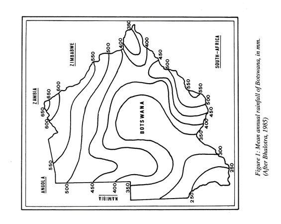
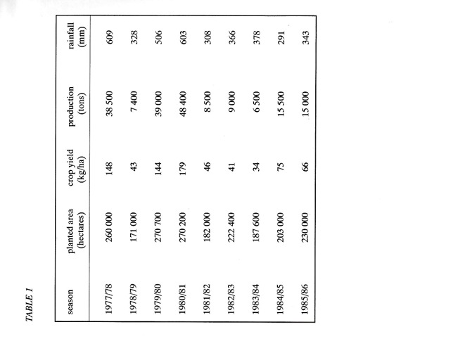
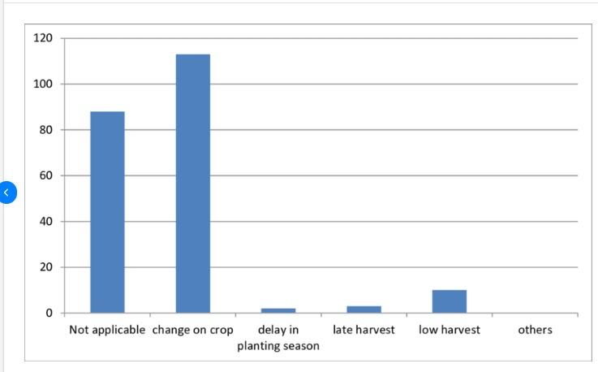
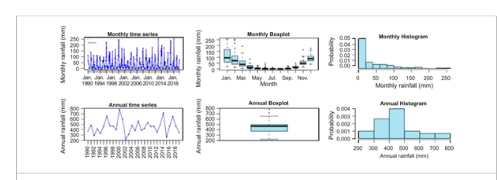
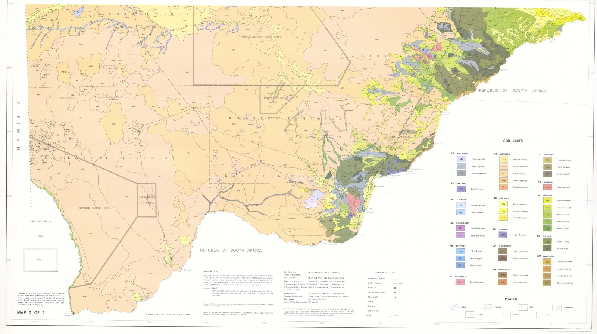
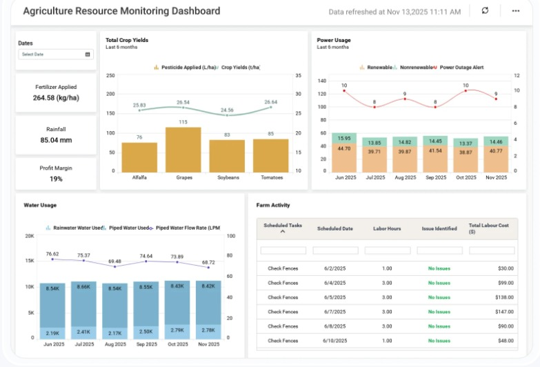
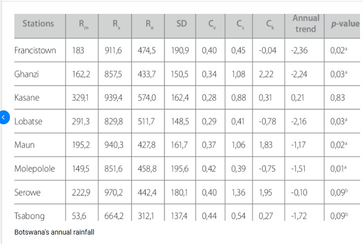

1. Mean Annual Rainfall Distribution Map

What it is: A contour map showing the average annual rainfall across Botswana in millimeters.
The Insight: Rainfall drops drastically from 650mm in the far north to under 250mm in the southwest. It visually explains regional crop choices: the wetter north can grow water-intensive maize, while the dry south and west must rely on tough crops like sorghum and millet.
2. Historical Rainfall vs. Crop Production Table

What it is: A historical data table linking specific farming seasons to total rainfall and crop production (in tons).
The Insight: It directly proves how vulnerable farming is to rainfall. In 1980/81, good rains (603mm) yielded 48,400 tons of crops. In 1982/83, rainfall dropped to 308mm, and production crashed by 80% to just 8,500 tons.
3. Drought Severity & Economic Impact Map

What it is: A map grading the severity of drought on crop growth, paired with a table showing government expenditure on drought relief.
The Insight: It proves that bad rainfall is not just a farming problem, but a national economic crisis. The map shows areas with "almost no crop," while the table shows millions of Pula spent on relief as droughts persist.
4. Farmer Adaptation to Climate Variability

What it is: A bar chart showing the different ways climate variability impacts farmers' decisions.
The Insight: The tallest bar is "change on crop." It shows that successful farmers adapt. Instead of just accepting a late harvest, they actively switch to faster-growing or drought-resistant crops when the rains are delayed.
5. Long-Term Rainfall Time Series & Distribution

What it is: Six charts analyzing decades of rainfall data, including monthly and annual averages, histograms, and box plots.
The Insight: These graphs prove that Botswana has a very short rainy season (mostly January and February). They also show that total annual rainfall fluctuates drastically, causing unpredictable cycles of floods and droughts.
6. Botswana Soil Types Spatial Distribution Map

What it is: A detailed geographic map categorizing the different soil units found across Botswana's districts.
The Insight: It shows that the west is mostly sandy soil (which loses water and nutrients quickly), while the north has clay-heavy soil (which holds water well). This explains why most large-scale commercial farming is concentrated in the north and east.
7. Smart Farm Resource Monitoring Dashboard

What it is: A modern digital dashboard tracking daily farm metrics like water usage, power, fertilizer application, and crop yields.
The Insight: It demonstrates precision agriculture. It shows how commercial farmers use technology to manage resources efficiently and monitor exactly how much rainfall they receive, rather than just relying blindly on the weather.
8. Station-Level Rainfall Variability Table

What it is: A statistical table showing rainfall metrics (Mean, Max, Standard Deviation, Coefficient of Variation) for various towns.
The Insight: It proves that rainfall is highly unpredictable. For example, Tsabong receives very little rain (53.6mm) and it varies wildly (high Cv index) from year to year. This explains why farmers there cannot rely on normal crops and must use drought-resistant seeds.
Why is it important to know rainfall and temperature before planting?
In a semi-arid country like Botswana, planting without checking climate data is a gamble. Here is why these dashboards are critical:
- Seed Germination: Seeds need specific soil moisture and temperature to germinate. Planting too early before the rains means seeds will dry out and die. Planting too late means crops won't mature before the winter frost.
- Choosing the Right Crop: Temperature and rainfall dictate what will survive. Knowing a region gets under 400mm of rain tells a farmer to plant sorghum or millet instead of maize, preventing total crop failure.
- Pest and Disease Control: High temperatures and specific humidity levels trigger outbreaks of pests (like armyworms) and fungal diseases. Knowing the forecast helps farmers prepare and spray on time.
- Financial Planning: If the forecast shows a high probability of drought (low rainfall), a farmer can choose to plant a smaller area, saving money on seeds, fertilizer, and labor, avoiding massive debt.
The Importance of these Dashboards: These dashboards transform raw weather data into actionable intelligence. They allow farmers to shift from reactive farming (panicking when a drought hits) to proactive farming (planning crops and resources based on historical and real-time climate trends), ensuring food security and financial stability.